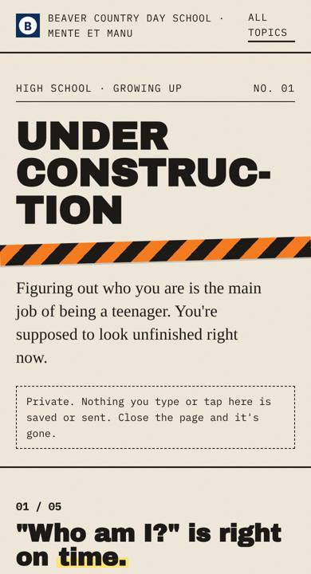

Student Toolkit · Design prototypes · October 2026
Same lessons, new packaging. Each format takes something teens hold in their hands and turns it into the page. They are working pages: tap, slide, press play, and try the check-in. Nothing typed or tapped in them is saved or sent. Each has a BCDS version and a generic version with any school's name and colors.
Prototypes for review. Content from the Student Toolkit by Richard M. Wilson, PsyD.